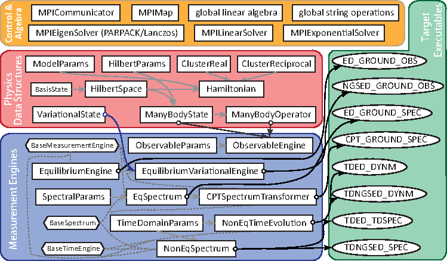

Function of the Codes
This is an exact diagonalization based code for equilibrium/non-equilibrium spectra calculation in correlated systems, including five executable files:

ED GROUND OBS is the basic program calculating the equilibrium (ground or excited) state and its static properties. It relies on the model params.in for model parameters, hilbertspace params.in for state configurations, geometry and restrictions, and obs params.in for the requested observables.
NGSED GROUND OBS is the program calculating the ground state of electron-phonon systems using the variational non-Gaussian + ED approach. It relies on the model params.in for model parameters, hilbertspace params.in for state configurations, geometry and restrictions. Currently, the obs params.in input is not supported.
ED GROUND SPEC is the program calculating the equilibrium (ground-state or finite-temperature) spectroscopies. It relies on the model params.in for model parameters, hilbertspace params.in for state configurations, geometry and restrictions, and spec params.in for the requested spectral type(s) and energy range.
CPT GROUND SPEC is the program calculating the ground-state spectroscopies (restricted to spectral functions and dynamical spin/charge structure factors). It relies on the model params.in for model parameters, hilbertspace params.in for state configurations, geometry and restrictions, spec params.in for the requested spectral type(s) and energy range, and cpt params.in for the CPT-cluster options.
TDED DYNM is the program calculating the pump-induced dynamics of a system starting from its ground state. It relies on the model params.in for model parameters, hilbertspace params.in for state configurations, geometry and restrictions, and timeparams.in for the time-domain and pump parameters.
TDED TDSPEC is the program calculating the pump-probe spectroscopies of a system starting from its ground state. It relies on the model params.in for model parameters, hilbertspace params.in for state configurations, geometry and restrictions, timeparams.in for the time-domain and pump parameters, and spec params.in for the requested spectral type(s) and energy range.
{kind=link}
FIG. 1 Structure of the classes in the program. The rectangle boxes are regular classes; the hexagonal boxes are base classes; the circles are target objects.